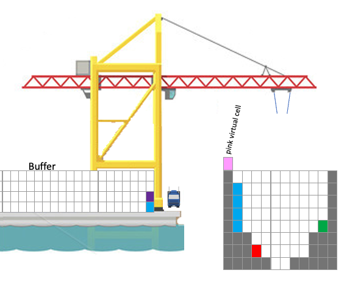
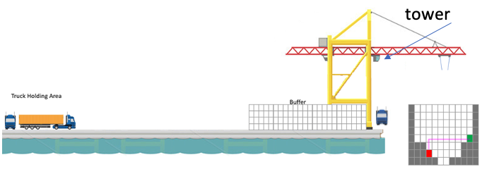
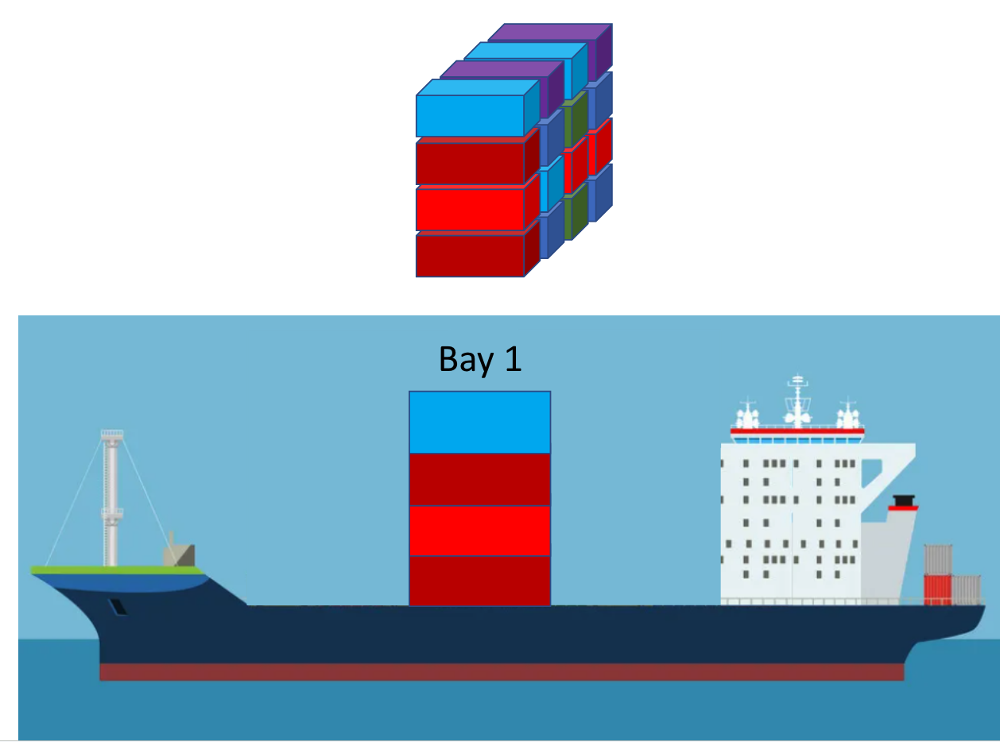

- The cost for any transfer between a truck and ship or buffer is 2 minutes.
- The cost for any transfer between the buffer and ship is 4 minutes(between the 2 pink cells).
- The cost for any transfer in ship or buffer is 1 minute / cell.
Ship Management System
The software's purpose is to identify the most efficient solution (minimizing time consumption) for loading/unloading operations and optimizing the balance of a ship at Keoghs Port. Keoghs Port is a company that generates revenue through ship loading, unloading, and balancing.
When a ship arrives at the port, the operator—Keoghs Port staff stationed in a tower that moves along with the crane—receives a manifest from the captain. This manifest is a text file containing information about the containers, including their coordinates, weight, and descriptions (e.g., Walmart Ohio Cat toys).

A manifest sample
The cost comes from the movement of crane. Regardless of whether the crane grabs a container or not, there will be a cost as long as the crane is moved.

If the current task is to loading/unloading a ship. At this moment, the operator already has a list of containers that need to be unloaded and containers on trucks waiting to be loaded.
If the current task is to balancing a ship, then there is no need to consider loading/unloading process. All the work is to move the containers on the ship so that the weight difference between the left half of the ship and the right half of the ship is within 10%.
Before the introduction of this software, operators relied on pen and paper to calculate what they believed to be the best solution based on their past experience. This manual process was time-consuming and couldn't guarantee the attainment of the optimal solution.
The software deals with X2 class ships, that means ships only have one bay. This one bay has a possible
8 rows and 12 columns, but some ships could have less.

Let's start with a 2x4 bay class ship, try to find the balancing process. Since the crane can only grab one container each time, it is always going to be pick up, drop off, pick up, drop off...
- In the odd layers, we pick a column to put the crane over, and pick up .
- In the even layers, we pick a column to put the crane over, and drop off .
The following slides show the Spanning Tree of the algorithm:
This is the third item's accordion body. It is hidden by default, until the collapse plugin adds the appropriate classes that we use to style each element. These classes control the overall appearance, as well as the showing and hiding via CSS transitions. You can modify any of this with custom CSS or overriding our default variables. It's also worth noting that just about any HTML can go within the
.accordion-body, though the transition does limit overflow.
Content for Profile tab...
Content for Contact tab...
Content for Disabled tab...